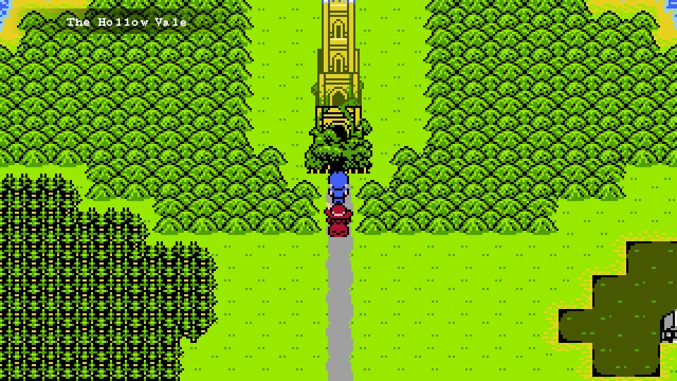
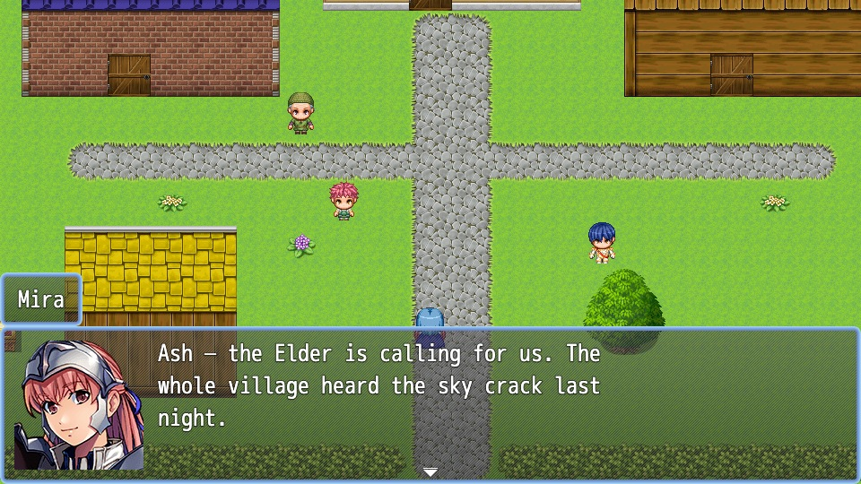
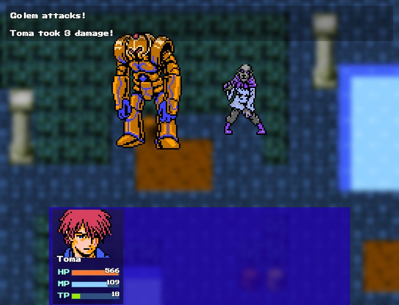
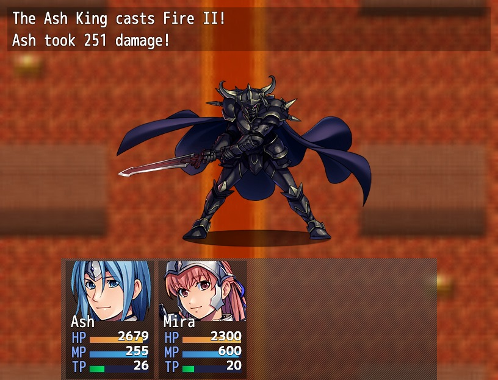

Why I gave Claude RPG Maker instead of a blank repo
An MCP server that lets Claude build RPG Maker MZ games, and why a limited engine is the whole point.
Miko Zyzanski5 min read
The release video. Every game shown is an example Claude built with the server; none of them are released.
I built rpgmaker-mz-mcp, an MCP server that gives Claude direct access to an RPG Maker MZ project: the database, maps, tiles, events and dialogue. It has 128 tools. With them Claude can create a skill, paint a town, place an NPC and wire up a quest. It can then boot the game headlessly and play through what it just built to check it works.
01Why RPG Maker?
RPG Maker is a limited engine, and that's exactly why it works.
Ask an AI to build an RPG from scratch and it has to invent everything before it gets to the fun part: rendering, input, a save system, menus, message windows, inventory, and the battle system with its damage formulas, turn order and status effects. Every one of those is a place for bugs to hide. Every vibe-coded game also ends up built differently, so nobody, you or the next session of Claude, has a map of how it fits together.
RPG Maker has already made those decisions. The battle system, menus, saving, shops, inventory, random encounters and event scripting all exist, and plenty of games have shipped on them. That changes the job for Claude in three ways:
Filling in data instead of writing an engineA game is mostly records: this actor has this class, this skill does this damage, this map has this event on this tile. Claude writes those records, and the engine already knows how to run them.
Output that can be checkedBecause everything is structured data, the server can validate it. It catches a skill pointing to a state that doesn't exist, an event with a malformed command list, or a transfer to a missing map, and refuses the write. For what validation can't catch, Claude boots the game headlessly and plays it.
Every game has the same shapeMaps, events and the database work the same way in every RPG Maker project. Claude doesn't have to learn a new codebase for each game, and neither do you.
The constraint is the feature. With less to invent, Claude spends its effort on the parts that make a game yours: the world, the story and the encounters.
Here is what that looks like in practice. These are all example games Claude built with the server:

OVERWORLDA retro-style adventure. Claude painted every map.

VILLAGEClaude wrote the maps, cast and dialogue.

BATTLERPG Maker's own battle system. Nobody had to write it.

BOSSA boss Claude designed, from stats to skills.
02How to work with it
After using it for a while, I've found two quite different ways to work with it.
As a precise tool
Sometimes you know exactly what you want but don't want to click through the setup yourself. Say you ask for "a potion that restores 20 HP but drains 20 MP." In the editor that means opening the Items tab, adding two effects, entering the values and picking a scope. Through the MCP, Claude turns your sentence into one call:
The same works for a class's EXP curve, a boss fight's mid-battle event, or a conversation that branches on a switch. You stay the designer and Claude does the data entry.
As a collaborator with free rein
Or you can hand over more: "Create a side quest in the village. A scholar lost her journal in the crypt, and the reward is a ring." Claude then paints the crypt, places the chest, writes the dialogue, sets up the switches so the quest can only complete once, and adds the ring to the database. Then it plays through the quest to check it.
Push further and you get entire games like the ones above. The same 128 tools cover both ends, so you can switch between a single potion and a whole quest in the middle of a conversation.
03No asset generation
The server doesn't generate any art or music. It uses what RPG Maker already has: the default assets plus the large library of official asset packs on Steam, covering tilesets, characters, battlers and music. DLC packs ship with tile-name files, which the server reads. That lets Claude ask for "grass" or "stone wall" by name instead of guessing tile IDs.
So there's no generated art, no clashing styles, and one less thing for Claude to worry about. You choose the look by choosing the packs, and Claude works with them.
04You can always take the wheel
To me this is the biggest win.
A fully vibe-coded game is a pile of code you didn't write. To change one line of dialogue, you first have to find where dialogue lives, then hope your change doesn't break something else. What this server produces is just an ordinary RPG Maker project. Open it in the editor and everything is where you'd expect it to be.
PAINTPaint over a corner of the map.WRITEReword a line of dialogue.TUNETweak a class's EXP curve.
Then save, go back to Claude and carry on. The server reads the project fresh on every call, so Claude builds on your changes instead of overwriting them. However much Claude builds, the game stays something you understand and can edit yourself.
TRY ITStart with a potion, or a whole quest
In Claude Code, this installs the server and its authoring skills:
claude plugin marketplace add Redseb/rpgmaker-mz-mcp
claude plugin install rpgmaker-mz@rpgmaker-mz-mcp
Any other MCP client can run npx -y rpgmaker-mz-mcp@latest with RPGMAKER_PROJECT_PATH set to your project.